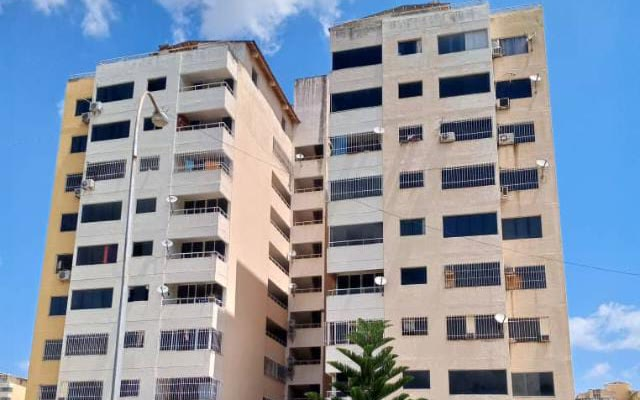
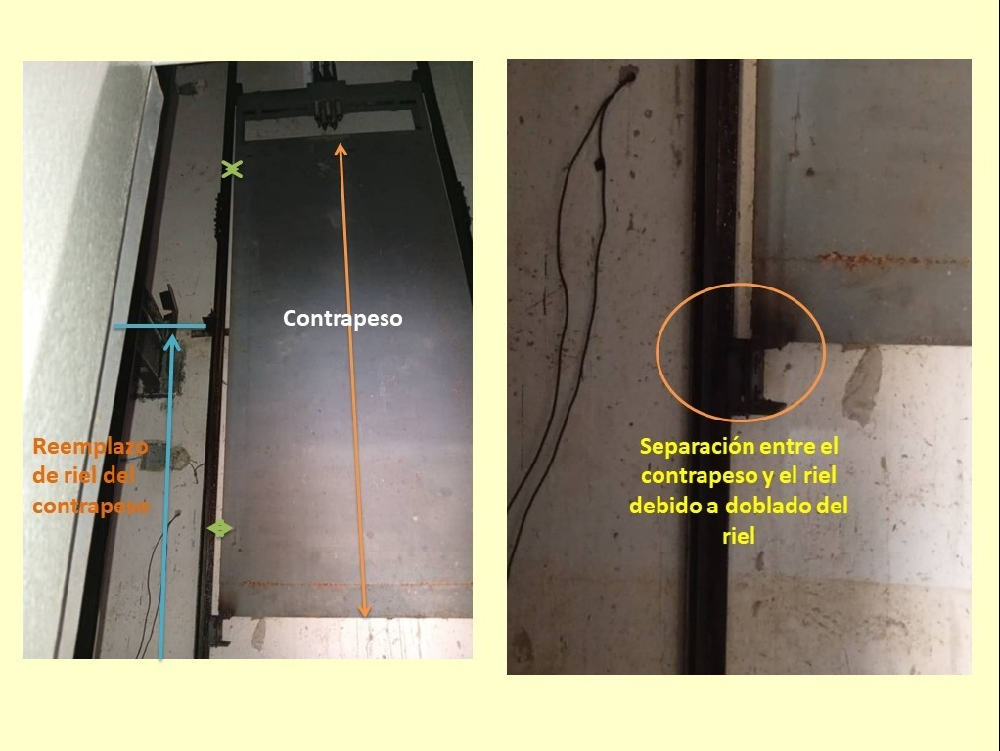

Tras el terremoto
Ayúdanos a reparar la Torre B del edificio Los Robles
El 24 de junio de 2026, dos terremotos de magnitud 7,2 y 7,5 sacudieron el norte de Venezuela. Nuestro edificio quedó con daños en la estructura, el ascensor parado y barandas partidas. Somos los vecinos y pedimos ayuda para repararlo.
📍 Conjunto Residencial Bosque Real · Edificio Los Robles · Torre B · Charallave, Venezuela

Elige un monto
Si dejas la casilla sin marcar, tu donación aparece como «Anónimo». No publicamos el nombre de nadie sin que lo pida.
¡Gracias por tu ayuda!
Tu donación ayuda a devolverle un hogar seguro a las familias de la Torre B.
- 🔒 Pago seguro procesado por SumUp
- 💳 Los datos de tu tarjeta no pasan por este sitio
- 📊 La recaudación se actualiza automáticamente
🇻🇪 ¿Estás en Venezuela? Ayuda por pago móvil en bolívares →
¿Prefieres otra vía o tienes problemas con el pago? Escríbenos: Contáctanos
¿Estás en Venezuela? Ayuda por pago móvil
El pago con tarjeta de arriba es en euros y está pensado para quienes ayudan desde el exterior. Si estás dentro de Venezuela, puedes aportar en bolívares por pago móvil a la cuenta de la Junta de Condominio.
Escanéalo desde la app de tu banco
O ingresa los datos a mano:
- Banco
- Banco de Venezuela (0102)
- RIF
- J-501036594
- Teléfono
- 0412-9331278
- A nombre de
- Junta de Condominio Los Robles Torre B
⚠️ Importante: los aportes por pago móvil no aparecen
automáticamente en el contador de arriba, porque ese contador solo lee los
pagos con tarjeta.
Envíanos la captura de tu pago al correo de la administración del
edificio, admlosroblesb@hotmail.com, o por
WhatsApp. Es la única forma de que tu aporte quede contado: lo sumamos a mano, lo
reportamos en Actualizaciones y podemos agradecértelo.
¿Qué está pasando?
El 24 de junio de 2026, a las 6:04 de la tarde, un terremoto de magnitud 7,2 sacudió el norte de Venezuela con epicentro cerca de San Felipe, en el estado Yaracuy. Treinta y nueve segundos después llegó un segundo sismo, de magnitud 7,5. Fue uno de los peores desastres naturales de la historia reciente del país.
Nuestro edificio, la Torre B de Los Robles, en el Conjunto Residencial Bosque Real de Charallave, quedó en pie, pero dañado. Las fotos de esta página muestran grietas verticales que recorren columnas de piso a techo, concreto desprendido en las uniones de vigas y columnas, losas de piso agrietadas y muros rajados en diagonal, incluida la estructura de la azotea.
Hasta dónde llega ese daño es lo que falta por determinar. Protección Civil inspeccionó el edificio y dejó constancia de una fractura continua desde la planta baja hasta la azotea, de las juntas de dilatación con movimiento extremo y de una grieta en X en la sala de máquinas del ascensor que califica de «potencialmente peligrosa». En esa misma inspección visual hizo constar que no observó daño estructural en las columnas base, y recomendó un peritaje de ingenieros municipales y forenses para evaluar la estructura, las juntas y la escalera de servicio, que es la única vía de evacuación del edificio. Ese peritaje está pendiente y el informe completo está publicado más abajo.
El ascensor dejó de funcionar y varias barandas de los balcones se partieron por completo: en algunas se ve la luz del día a través de la grieta.
La Torre B tiene 92 apartamentos afectados: la planta baja y diez pisos, de ocho apartamentos cada uno, más cuatro penthouses. Lo que hay que reparar es el edificio entero —la estructura, el ascensor y las barandas—, no una vivienda concreta, y eso está fuera del alcance de lo que podemos reunir aquí: los sueldos se cobran en bolívares.
Por eso pedimos ayuda fuera de Venezuela. Lo que buscamos es concreto: reparar la estructura, poner el ascensor en marcha y asegurar las barandas.
¿Para qué se usará tu ayuda?
- Peritaje de ingenieros y las obras de estabilización que determine
- Reparación del ascensor
- Muros agrietados, barandas de seguridad y azotea
- Impermeabilización de la losa de techo y juntas de dilatación, piso por piso
- La escalera de servicio, que es la única vía de evacuación del edificio
Sobre los 25.000 €: abajo puedes ver los presupuestos —2 del Ing. Ricardo Girón y 1 del técnico del ascensor, Multiservicios Ávila— y el informe de Protección Civil. Los tres presupuestos suman 14.421 $: pared de bloques 1.789,58 $, riel de contrapeso del ascensor 720 $ e impermeabilización de la losa de techo con juntas de dilatación 11.911,56 $ —en este último, las juntas se presupuestan por cada nivel (763 $) y la torre tiene once contando la planta baja—. Falta presupuestar las obras de estabilización que pide el informe de Protección Civil, entre ellas la grieta en X de la sala de máquinas del ascensor, que el informe califica de «potencialmente peligrosa por perder capacidad de resistencia». La meta cubre lo ya presupuestado y esas obras. Si la cifra final cambia, lo diremos en esta misma página.
Verifícalo tú mismo
No hace falta que nos creas sobre el terremoto: fue noticia mundial. Estos medios e instituciones informan del sismo; no avalan esta campaña.
Qué ves en las fotos y qué significa
Una grieta no es igual que otra. Esto es lo que muestran las fotos.
{kind=link}

La Torre B hoy
Fotos reales de los daños que dejó el terremoto en la Torre B. Toca una imagen para verla completa.
Cómo manejamos el dinero
Sabemos que donar a un grupo de vecinos en otro país exige confianza. Por eso asumimos estos compromisos:
- Los fondos los administra la Junta de Condominio Los Robles Torre B (RIF J-501036594), que rinde cuentas ante la asamblea de propietarios del edificio.
- El monto recaudado que ves arriba lo reporta la pasarela de pago, no lo escribimos nosotros.
- Publicaremos aquí en qué se usa cada aporte, con fotos del avance de los trabajos.
- La evaluación técnica del edificio ya está hecha y los presupuestos de la reparación están publicados más abajo, con el informe de Protección Civil, para que cualquiera pueda ver de dónde sale la cifra que pedimos.
Presupuestos y evaluación técnica
Estos son los documentos en los que se basa la cifra que pedimos, tal como nos los entregaron: tres presupuestos —2 del Ing. Ricardo Girón, la pared de bloques y la impermeabilización de la losa de techo con juntas de dilatación, y 1 del técnico del ascensor, Multiservicios Ávila, por el riel de contrapeso— y la evaluación técnica de Protección Civil. Las juntas se presupuestan por cada uno de los once niveles de la torre. Toca una imagen para verla completa.
Un matiz, porque preferimos decirlo nosotros: en su inspección visual, Protección Civil hizo constar que no observó daño estructural en las columnas base ni en los elementos de soporte principales, y recomienda un peritaje de ingenieros municipales y forenses para determinar los daños en la estructura, en las juntas de dilatación y en la escalera de servicio, que es la única vía de evacuación del edificio. Ese peritaje está pendiente. Publicamos el informe completo, con esa frase incluida: preferimos que lo leas tú a que te lo resumamos. A medida que lleguen más informes y presupuestos, los iremos subiendo aquí, íntegros y sin recortar.
Quiénes han ayudado
Cada línea es una donación con tarjeta confirmada por la pasarela de pago. Los nombres solo salen cuando la persona pide que salga el suyo; el resto figura como «Anónimo».
Actualizaciones
-
Agosto de 2026 · Presupuestos e informe técnico
Publicamos el informe técnico de riesgo de Protección Civil y tres presupuestos: 2 del Ing. Ricardo Girón y 1 del técnico del ascensor, Multiservicios Ávila. Con los documentos en mano, la reparación resultó más cara de lo que habíamos estimado: las juntas de dilatación se presupuestan por cada uno de los once niveles de la torre y todavía faltan por valorar las obras de estabilización que pide el informe. Por eso subimos la meta de 10.000 € a 25.000 €. Los documentos están íntegros en la sección «Presupuestos y evaluación técnica».
-
Julio de 2026 · Evaluación técnica
Ya gestionamos la evaluación técnica del edificio. Publicaremos aquí los presupuestos de la reparación en cuanto los tengamos en mano.
-
Julio de 2026 · Inicio
Abrimos esta campaña. Documentamos los daños del terremoto con fotografías del edificio y comenzamos a pedir ayuda para las reparaciones.
Iremos publicando aquí cada avance: presupuestos, informe del ingeniero y el progreso de las obras.
Preguntas frecuentes
¿No puedes donar? Comparte
Difundir esta campaña cuesta un minuto y puede valer tanto como una donación. Que llegue a quien pueda ayudar.
Quiénes somos
Esta campaña está organizada por la Junta de Condominio Los Robles Torre B, en representación de las familias que viven en el edificio de la Conjunto Residencial Bosque Real, edificio Los Robles, en Charallave. Toda la ayuda recibida se destina a la reparación de la torre.
- Organiza
- Junta de Condominio Los Robles Torre B
- RIF
- J-501036594
- Persona de contacto
- Bárbara Bohorques
- Ubicación
- Torre B, Conjunto Residencial Bosque Real, edificio Los Robles, Charallave, estado Miranda, Venezuela